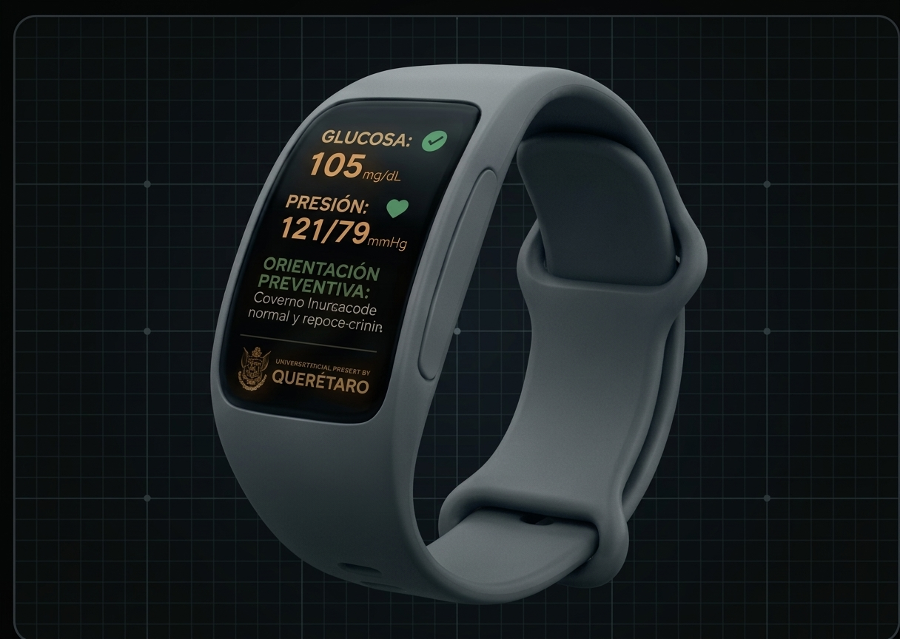
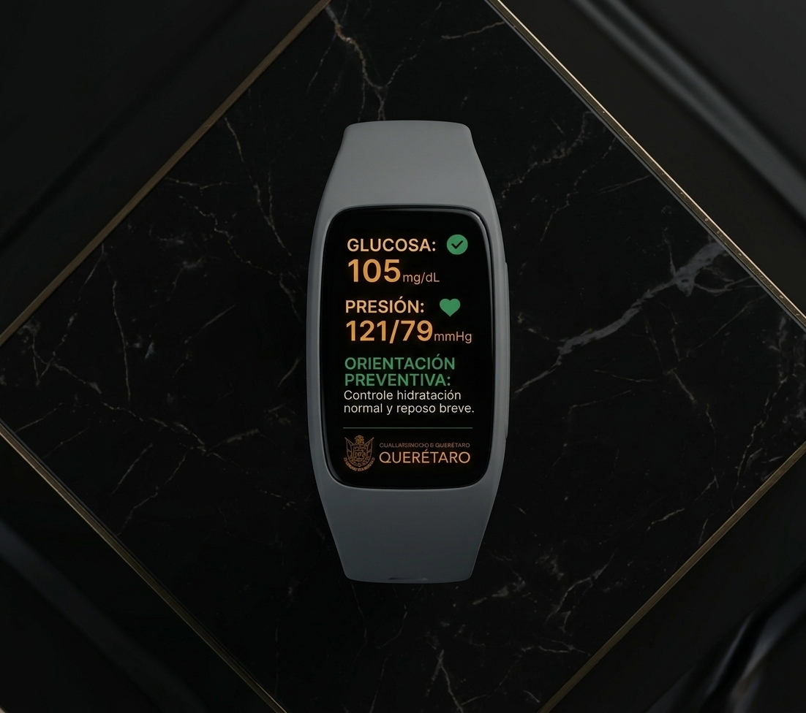
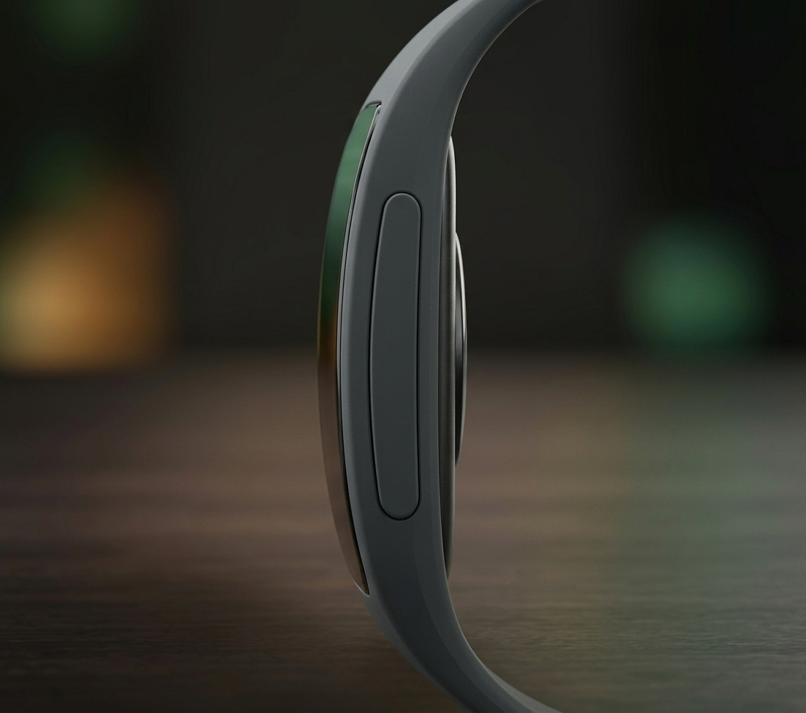
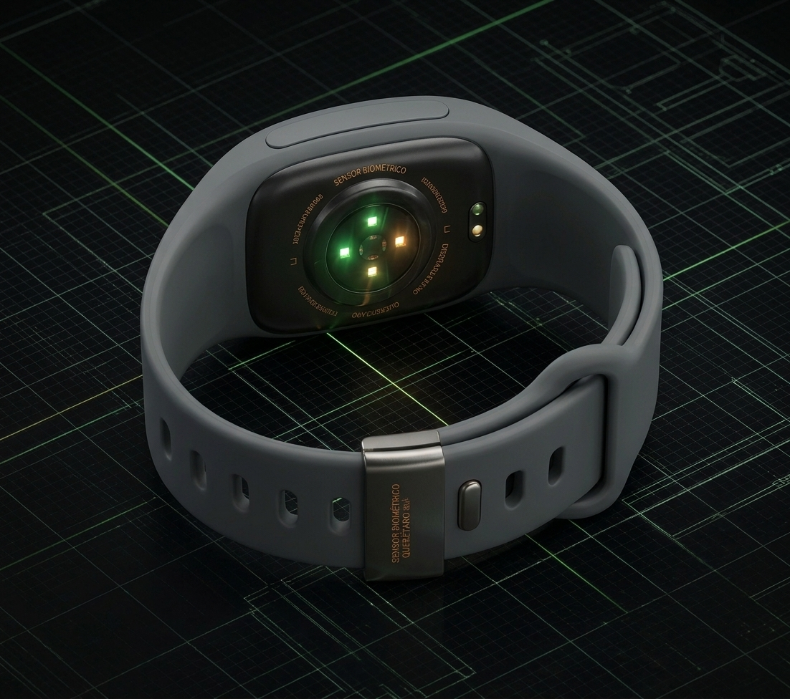
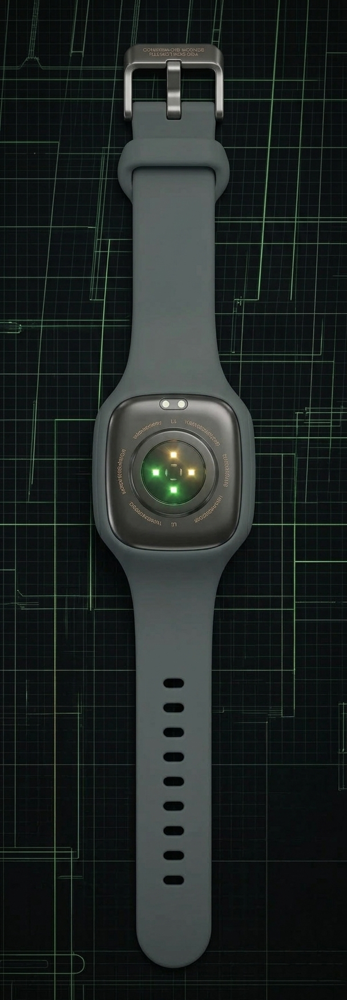

El primer sistema biomédico portátil con Inteligencia Artificial local (On-Device AI) diseñado para democratizar el diagnóstico médico preventivo en Querétaro y México.
Mientras la Zona Metropolitana goza de infraestructura médica de primer nivel, en las comunidades rurales del Semidesierto (Peñamiller, Tolimán, Cadereyta) y de la Sierra Gorda (Pinal de Amoles, Jalpan, San Joaquín, Landa de Matamoros), así como en zonas periurbanas, la población enfrenta una barrera crítica de acceso a la salud.
Acceder a un electrocardiograma o prueba metabólica requiere citas con meses de anticipación en la capital, provocando que padecimientos crónicos se detecten en etapas irreversibles o de urgencia médica.
Para un agricultor o artesano, viajar a un hospital implica pagar pasajes, alimentos, hospedaje y perder días de trabajo, haciendo que la prevención sea un lujo inaccesible.
Las soluciones digitales convencionales fracasan al depender de conectividad a internet de alta velocidad o requerir smartphones de gama alta fuera del alcance popular.

Algoritmos de IA integrados directamente en el procesador emiten pre-análisis situacionales y recomendaciones preventivas en segundos, funcionando al 100% en zonas sin red o señal celular.
En cuanto el equipo detecta red, los datos se sincronizan con un médico especialista para validar el informe e instruir seguimiento vía WhatsApp o SMS.
Elimina viajes costosos a la capital y ofrece pruebas preventivas mediante un esquema popular, justo y cercano a la comunidad.
Tecnología no invasiva y ergonomía adaptada a la vida diaria

Pantalla Curve OLEDVisualización directa de constante vitales: presión arterial (sistólica/diastólica), estimación de glucosa en sangre y mensajes cortos de orientación inmediata.

Procesador AIProcesamiento local de alertas biométricas. Si detecta valores críticos, activa un protocolo claro de actuación o primeros auxilios sin necesitar conexión.

Matriz de SensoresBiosensores ópticos basados en fotopletismografía (PPG) e impedancia bioeléctrica que leen parámetros biológicos sin pinchazos ni agujas.

Grado Médico e IP68Ensamble suave e hipoalergénico resistente al agua y polvo, pensado para el uso continuo de adultos mayores o trabajadores del campo.
Consumidores Vulnerables:
Socios Locales de Distribución:
Clientes Institucionales:
Ubicado en el sector de Salud Digital (HealthTech) y Tecnología Médica Inclusiva, el modelo asegura sostenibilidad financiera sin perder el impacto social:
El paciente paga una cuota popular por estudio que cubre insumos, paga la comisión del agente local y mantiene la plataforma médica.
Los contratos de salud ocupacional con industrias y licitaciones públicas gubernamentales financian los kits en comodato y subsidian las pruebas en la Sierra Gorda.
Módulos de medición pública instalados en plazas comunitarias y DIF para la toma de signos vitales gratuita o de muy bajo costo.
Pinal de Amoles, Tolimán y Peñamiller. 20 Agentes comunitarios y 2,500 estudios preventivos.
18 municipios de Querétaro. 150 Agentes activos y 25,000 estudios anuales con alianzas B2B/B2G.
Réplica en Guanajuato, San Luis Potosí e Hidalgo. Red de +500 agentes y +100,000 diagnósticos anuales.
Precisión biométrica garantizada
Respuesta médica certificada
Operatividad Offline con IA
Ahorro en gastos de traslado